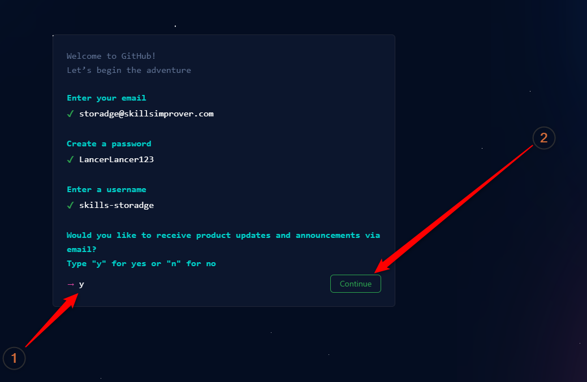

:
:
На следующем шаге GitHub робко спрашивает вас:
Чувак, можно тебе слать спам или нет?
Картинка только с вопросом
Официально этот вопрос звучит вот так:
Would you like to receive product updates and announcements via email?
Что на русский можно перевести примерно как:
Можно мы будем слать вам на почту важные новости и новые фишки нашего ресурса?
И здесь без лишнего пафоса, сарказма и болтологии можно отметить два момента:
Поэтому, если вы спросите меня — Нужно ли подписываться на рассылку от GitHub?
, я вам отвечу:
Да, на рассылку от GitHub нужно подписываться
Единственный интересный момент этого шага заключается в том, как вы подписываетесь на рассылку?
Посмотрите внимательно на картинку выше.
Yes \ No, на которые можно нажать.
Вместо этого GitHub предлагает вам действовать, как программисты 80-х прошлого века
:
Если вы согласны получать новости, вы должны ввести y или Y.
Если вы не согласны, вы должны ввести n или N.
Я на рассылку согласился, поэтому моя страница вот такая:

После чего можно жать кнопку Continue и переходить к следующему шагу.